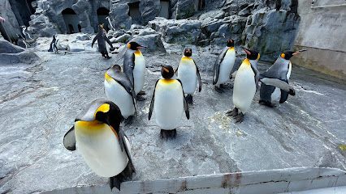

旭山動物園は寒冷地ならではのユニークな展示方法で動物たちの生き生きとした暮らしを覗くことができます。ここでは「行動展示」と呼ばれる、動物本来の行動を引き出し、自然に近い環境で飼育する展示方法行っており、訪問者は動物たちの自然な姿や行動を間近で観察することができます。例えば、ペンギンの水中飛行をガラス越しに見ることができる「ペンギン館」や、ホッキョクグマの泳ぐ姿を水中トンネルから観察できる「ホッキョクグマ館」などが人気のようです。